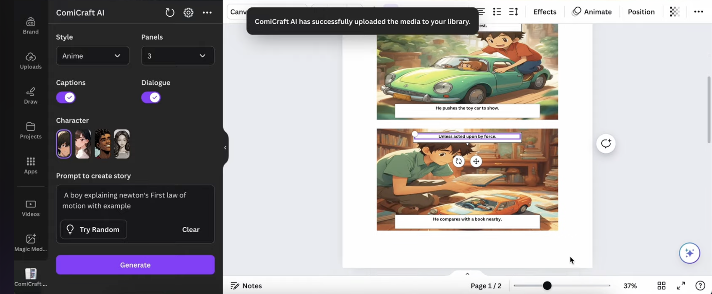

The Product Thesis
Make Visual Storytelling Independent
Storytelling has always evolved alongside the tools available to create it, from ancient cave paintings, carvings to illustrated books and digital comics. Yet turning an idea into a finished comic still requires coordinating writing, illustration, character design, panel composition, and publishing. Generative AI could remove some of those barriers and bridge the gap to make story telling accessible to all.
Market Context
The Creator Economy Meets AI: The opportunity sat at the intersection of accessible design software, AI-assisted creation, and digital storytelling. At the time of the hackathon, Canva reported a potential reach of 185 million monthly active users through its developer ecosystem which established the scale of the platform opportunity.
The strategic implication was important: rather than building another standalone AI image generator, ComiCraftAI could extend an existing design ecosystem with a more specialized creation workflow.
Product opportunity
- Audience: Aspiring storytellers, comic enthusiasts, independent creators, and people without professional illustration skills.
- Core job: Translate a written idea into a coherent, multi-panel visual narrative.
- Primary friction: The gap between generating individual images and assembling a consistent story.
- Potential distribution advantage: Integrating the workflow into Canva, where users could continue editing and preparing their creative work for publication.
Differentiation: Consistency as a Core Product Capability
ComiCraftAI's key product challenge was not image generation alone. It was maintaining narrative continuity across a sequence of images. A character who looks different in every panel interrupts the reader's experience, even when each individual image looks impressive. In a multi-panel story, consistency is part of the content's usability.
In 2024, text-to-image models could create compelling illustrations, yet maintaining a character's identity, appearance, and artistic style across multiple scenes remained a significant challenge. Research published at the 2024 International Conference on Agents and Artificial Intelligence explored multi-stage techniques for generating consistent character artwork, underscoring the technical difficulty of this problem. (Research)
This shaped the product thesis behind ComiCraftAI: The opportunity wasn't just to generate comic panels. It was to give people a repeatable way to turn a story into a visually coherent, shareable creative work without needing to coordinate multiple specialized tools or depend on a professional illustrator.
Product Quality Management
The Challenge: When Every Output Is Different, What Does “Done” Mean?
Traditional software products can often be validated against a predictable expected result. Non-deterministic nature of Generative AI products introduce a different challenge: the same input can produce different outputs, and an output that looks impressive may still fail the user's actual task.
For ComiCraftAI, a comic-generation app built around GPT, Stable Diffusion XL, and LoRA-based character consistency, quality was multidimensional. A successful coherent generation could still require so many corrections that creating the comic manually would have been easier.
The product management challenge was to define quality beyond visual appeal and create a framework for evaluating whether the output was genuinely usable. Approach to quality management was by connecting output evaluation to release decisions, generation costs, and the economics of delivering a usable creative product.
Quality Model
| Quality dimension | What to evaluate | Example failure |
|---|---|---|
| Character consistency | Identity, facial features, clothing, and recognizable attributes across panels | The protagonist's appearance changes between scenes |
| Narrative fidelity | Alignment between the original story and generated panels | An important event is omitted |
| Visual coherence | Scene composition, continuity, and readability | A character's action conflicts with the surrounding scene |
| Text quality | Dialogue accuracy, speaker attribution, and caption placement | Dialogue is assigned to the wrong character |
| Workflow usability | Ability to edit, regenerate, and assemble the final comic | Fixing one panel forces the creator to regenerate accepted work |
The Quality Scorecard : Proposed evaluation model
| Dimension | Weight | Evaluation method |
|---|---|---|
| Character consistency | 30% | Compare defining character attributes across panels |
| Narrative fidelity | 25% | Review scene logic, composition, and readability |
| Visual coherence | 20% | Help identify products and visible issues |
| Text quality | 15% | Check dialogue, captions, and speaker attribution |
| Workflow usability | 10% | Evaluate editing and correction effort |
Evaluated each generated comic against a predefined rubric using a representative set of stories, characters, and scene types. Each dimension was scored on a five-point scale, with anchored definitions ranging from unusable to publication-ready. The weighted score helped compare versions.
Quality gates
Paired the scorecard with explicit acceptance criteria. Minimum overall quality score prevents an improvement in visual polish from masking a regression in narrative fidelity or character consistency.
- Critical defects: The output is unusable or materially changes the intended story.
- Major defects: The comic remains understandable but requires significant correction.
- Minor defects: Small visual or formatting issues that do not prevent use.
Defect Management: Turning Failures Into Product Decisions
| Defect category | Potential cause | Product response |
|---|---|---|
| Character drift | Inadequate character conditioning or inconsistent prompts | LoRA configuration and character references |
| Story deviation | Incomplete or inaccurate panel descriptions | Refine narrative decomposition and prompt constraints |
| Comic style mismatch & Poor composition | Weak scene instructions or layout limitations | Introduce panel-level controls and Improve generation prompts, Engineer negative prompts |
| Dialogue errors | Mismatched text generation or placement | Separate dialogue validation and editing feature |
| Unwanted or Unsafe content | Inadequate content filtering or unsafe prompts | Strengthen safeguards and provide safe regeneration |
| Excessive correction | Limited editing controls | Introduce targeted panel regeneration |
Model Evaluation
- Evals: Define measurable acceptance criteria and test for regressions before release. Automated checks to flag structural errors, rubric-based AI evaluation and human review would assess more subjective qualities.
- Hallucination management: Identify when creative generation violates the user's intent, rather than assuming every novel detail is wrong. The evaluation criteria distinguished acceptable creative interpretation from changes that compromise narrative intent. Failures was categorized by severity and used to refine prompts.
- A/B testing: Validate product changes using offline evaluations for comparisons. Guardrail metrics were added to ensure that improvements in completion do not come at the expense of visual quality, latency, or cost.
- Established a baseline, test changes against the same evaluation set, investigate regressions, and monitor emerging failure patterns.
Product Evaluation : Proposed quality KPIs
| KPI | Initial target to test |
|---|---|
| Character consistency pass rate | ≥80% |
| First-pass usable-comic rate | ≥60% |
| Critical-defect rate | 0 in the release acceptance set |
| Successful targeted panel edits | ≥80% |
| Median time to an accepted comic | Baseline - 25% |
| Excessive correction | Limited editing controls |